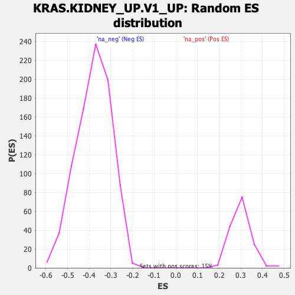

| | | Dataset | DE_genes2 |
| Phenotype | NoPhenotypeAvailable |
| Upregulated in class | na_neg |
| GeneSet | KRAS.KIDNEY_UP.V1_UP |
| Enrichment Score (ES) | -0.7034501 |
| Normalized Enrichment Score (NES) | -1.8595319 |
| Nominal p-value | 0.0 |
| FDR q-value | 0.0 |
| FWER p-Value | 0.0 |
Table: GSEA Results Summary
 Fig 1: Enrichment plot: KRAS.KIDNEY_UP.V1_UP
Fig 1: Enrichment plot: KRAS.KIDNEY_UP.V1_UP
Profile of the Running ES Score & Positions of GeneSet Members on the Rank Ordered List
| SYMBOL | RANK IN GENE LIST | RANK METRIC SCORE | RUNNING ES | CORE ENRICHMENT | | 1 | CRYAB | 4 | 11.218 | 0.0302 | No |
| 2 | LMO3 | 68 | 7.335 | 0.0466 | No |
| 3 | ATP1A2 | 391 | 4.128 | 0.0399 | No |
| 4 | NSG1 | 458 | 3.654 | 0.0461 | No |
| 5 | NMNAT2 | 747 | 2.658 | 0.0372 | No |
| 6 | TUBB4A | 790 | 2.536 | 0.0418 | No |
| 7 | LIMCH1 | 805 | 2.510 | 0.0478 | No |
| 8 | GAD1 | 1059 | 2.030 | 0.0392 | No |
| 9 | DYNC1I1 | 1093 | 1.970 | 0.0427 | No |
| 10 | DNM3 | 1323 | 1.633 | 0.0344 | No |
| 11 | GRIK2 | 1517 | 1.409 | 0.0274 | No |
| 12 | EPB41L3 | 1591 | 1.358 | 0.0270 | No |
| 13 | CDK5R1 | 1693 | 1.286 | 0.0249 | No |
| 14 | GPR19 | 1786 | 1.220 | 0.0231 | No |
| 15 | RCAN2 | 1908 | 1.126 | 0.0194 | No |
| 16 | GPNMB | 1964 | 1.095 | 0.0193 | No |
| 17 | ST3GAL6 | 2094 | 1.028 | 0.0149 | No |
| 18 | MAP7 | 2172 | 0.992 | 0.0133 | No |
| 19 | ANK2 | 2204 | 0.973 | 0.0142 | No |
| 20 | CPEB3 | 4946 | 0.362 | -0.1378 | No |
| 21 | SYT1 | 5402 | 0.312 | -0.1623 | No |
| 22 | NME5 | 5803 | 0.268 | -0.1839 | No |
| 23 | NRN1 | 7588 | 0.101 | -0.2832 | No |
| 24 | ITGBL1 | 9224 | -0.053 | -0.3743 | No |
| 25 | PLSCR4 | 10749 | -0.206 | -0.4588 | No |
| 26 | SATB1 | 11168 | -0.255 | -0.4814 | No |
| 27 | PNMA2 | 11819 | -0.337 | -0.5168 | No |
| 28 | DDX6 | 13169 | -0.546 | -0.5906 | No |
| 29 | TRIM2 | 13314 | -0.570 | -0.5971 | No |
| 30 | SCG5 | 13669 | -0.641 | -0.6151 | No |
| 31 | CAB39L | 13918 | -0.697 | -0.6270 | No |
| 32 | MEF2C | 14360 | -0.816 | -0.6494 | No |
| 33 | GATM | 14560 | -0.886 | -0.6581 | No |
| 34 | GABRR2 | 14889 | -1.001 | -0.6737 | No |
| 35 | GPRC5B | 14963 | -1.036 | -0.6750 | No |
| 36 | GLDC | 15101 | -1.094 | -0.6797 | No |
| 37 | RAPGEF4 | 15362 | -1.244 | -0.6908 | No |
| 38 | EMP1 | 15495 | -1.316 | -0.6946 | No |
| 39 | KIF5C | 15655 | -1.417 | -0.6996 | Yes |
| 40 | NUDT11 | 15665 | -1.425 | -0.6962 | Yes |
| 41 | MAFB | 15727 | -1.475 | -0.6956 | Yes |
| 42 | SOBP | 15768 | -1.516 | -0.6938 | Yes |
| 43 | SORBS1 | 15773 | -1.519 | -0.6899 | Yes |
| 44 | SORL1 | 15787 | -1.536 | -0.6864 | Yes |
| 45 | CRYM | 15818 | -1.561 | -0.6838 | Yes |
| 46 | RNLS | 15824 | -1.565 | -0.6799 | Yes |
| 47 | PCDH9 | 15901 | -1.649 | -0.6796 | Yes |
| 48 | ASPA | 16052 | -1.791 | -0.6832 | Yes |
| 49 | AK5 | 16151 | -1.893 | -0.6835 | Yes |
| 50 | SCN1B | 16357 | -2.231 | -0.6889 | Yes |
| 51 | GRM5 | 16450 | -2.387 | -0.6875 | Yes |
| 52 | CFAP69 | 16455 | -2.391 | -0.6813 | Yes |
| 53 | ANK3 | 16567 | -2.578 | -0.6805 | Yes |
| 54 | WSCD1 | 16574 | -2.591 | -0.6738 | Yes |
| 55 | CHGB | 16587 | -2.615 | -0.6673 | Yes |
| 56 | NAP1L2 | 16738 | -2.928 | -0.6677 | Yes |
| 57 | MAGEH1 | 16747 | -2.940 | -0.6602 | Yes |
| 58 | DUSP6 | 16833 | -3.121 | -0.6565 | Yes |
| 59 | SIGLEC15 | 16886 | -3.316 | -0.6504 | Yes |
| 60 | METTL7A | 16911 | -3.395 | -0.6425 | Yes |
| 61 | PLCB1 | 16932 | -3.469 | -0.6342 | Yes |
| 62 | PLCL1 | 16937 | -3.500 | -0.6249 | Yes |
| 63 | PECAM1 | 17023 | -3.792 | -0.6194 | Yes |
| 64 | SERPINI1 | 17165 | -4.417 | -0.6153 | Yes |
| 65 | ALDH1A1 | 17176 | -4.447 | -0.6038 | Yes |
| 66 | PEG3 | 17213 | -4.644 | -0.5932 | Yes |
| 67 | RELN | 17218 | -4.659 | -0.5807 | Yes |
| 68 | TRIB2 | 17223 | -4.692 | -0.5682 | Yes |
| 69 | NRCAM | 17252 | -4.869 | -0.5566 | Yes |
| 70 | TMOD1 | 17256 | -4.896 | -0.5434 | Yes |
| 71 | CA2 | 17369 | -5.432 | -0.5349 | Yes |
| 72 | SPARCL1 | 17505 | -6.068 | -0.5260 | Yes |
| 73 | HEY1 | 17553 | -6.298 | -0.5115 | Yes |
| 74 | GPR37 | 17607 | -6.602 | -0.4966 | Yes |
| 75 | PLP1 | 17620 | -6.678 | -0.4791 | Yes |
| 76 | CCND2 | 17637 | -6.781 | -0.4616 | Yes |
| 77 | TMEM100 | 17676 | -7.078 | -0.4445 | Yes |
| 78 | SLC12A5 | 17720 | -7.433 | -0.4267 | Yes |
| 79 | GAP43 | 17768 | -7.851 | -0.4080 | Yes |
| 80 | NDN | 17792 | -8.056 | -0.3874 | Yes |
| 81 | KIT | 17813 | -8.351 | -0.3659 | Yes |
| 82 | NEFL | 17814 | -8.352 | -0.3432 | Yes |
| 83 | SELENOP | 17852 | -8.908 | -0.3211 | Yes |
| 84 | PELI2 | 17858 | -8.936 | -0.2971 | Yes |
| 85 | ADCY1 | 17868 | -9.091 | -0.2730 | Yes |
| 86 | ARPP21 | 17869 | -9.109 | -0.2482 | Yes |
| 87 | CPE | 17899 | -9.502 | -0.2241 | Yes |
| 88 | SCN2A | 17951 | -10.462 | -0.1985 | Yes |
| 89 | SLC1A3 | 17966 | -11.109 | -0.1691 | Yes |
| 90 | SFRP1 | 17983 | -11.778 | -0.1380 | Yes |
| 91 | A2M | 17990 | -12.301 | -0.1050 | Yes |
| 92 | SLC6A15 | 17996 | -12.511 | -0.0713 | Yes |
| 93 | ETV1 | 17999 | -12.640 | -0.0371 | Yes |
| 94 | TRIL | 18012 | -13.938 | 0.0001 | Yes |
Table: GSEA details [plain text format]

Fig 2: KRAS.KIDNEY_UP.V1_UP: Random ES distribution
Gene set null distribution of ES for KRAS.KIDNEY_UP.V1_UP